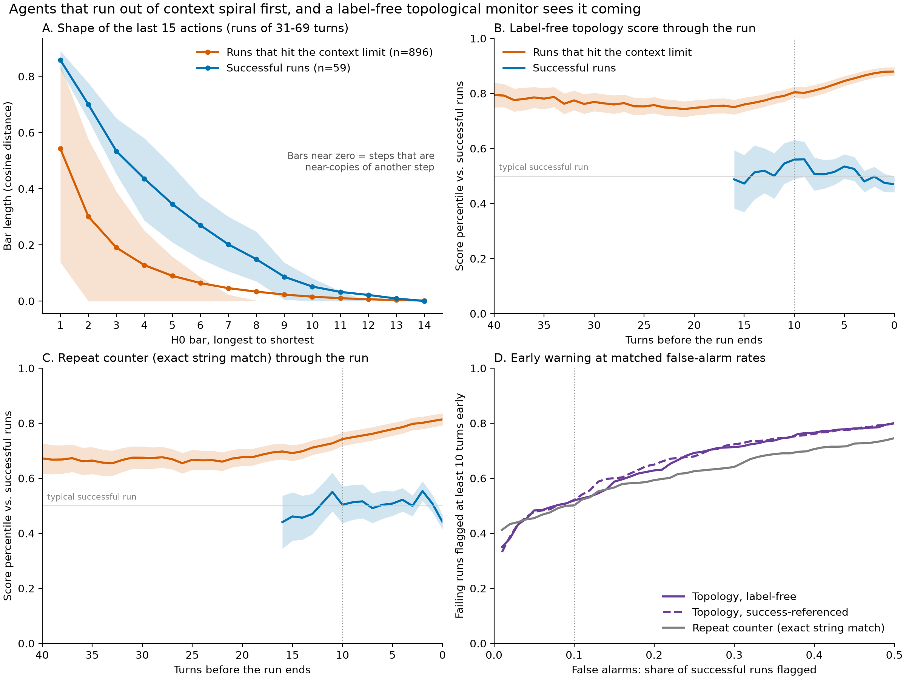

Agents Spiral Before They Run Out of Context
A label-free topological monitor, built only from how agent runs normally begin, flags software-engineering agents heading for context exhaustion about 16 turns before the cutoff.
The question
Failures in reasoning traces should have a strange shape. If an agent is going in circles, the geometry of its steps in embedding space should show it, and persistent homology is built to measure exactly that kind of geometry: clusters and loops.
The test bed is nebius/SWE-agent-trajectories, SWE-agent runs by a Llama-70B agent on real GitHub issues, grouped into runs that succeeded, ran out of context, or submitted a wrong fix.
Method
- Rips H0 on cosine distance captures clustering: near-copies merge instantly, so a spiral collapses.
- Path-complex H1 joins consecutive steps at zero distance, so every loop is a return to an earlier state.
- The anomaly score is the mean distance to the 10 nearest reference windows. In the label-free version, the reference is simply the first 15 turns of any run.
Findings
1. Failing agents spiral
In the last 15 actions of runs that hit the context limit, the topology collapses: most steps are near-copies of another. Reading the endings confirms it: the same edit retried five times, two files opened alternately, ls repeated.
2. It replicates, pre-registered
Four tests were fixed in advance and run on a fresh sample, with every earlier trajectory excluded. Only the late-collapse test passed, but it passed cleanly: AUC 0.885 with length matched, and +0.017 [0.008, 0.027] beyond length plus twelve hand-built repetition features, stable across 5/5 fold seeds.
3. The spiral comes first
| Context used so far | Repetition: doomed runs | Repetition: successful runs |
|---|---|---|
| 0–25% | 0.19 | 0.06 |
| 25–50% | 0.42 | 0.11 |
| 50–75% | 0.56 | 0.16 |
| 75–100% | 0.63 | 0.21 |
Doomed runs repeat three times as often in the first quarter of their context. The loop precedes the limit; it isn't just a symptom of running out of room.
4. It can be seen coming, without labels
| Detector, 10% false alarms | Runs flagged | ≥10 turns early | Median lead | Window AUC |
|---|---|---|---|---|
| Topology, reference = known successes | 0.76 | 0.52 | 16 | 0.787 |
| Topology, reference = run starts (no labels) | 0.75 | 0.52 | 16 | 0.806 |
| Topology, reference = own start | 0.74 | 0.48 | 15 | 0.811 |
| Repeat counter (exact string match) | 0.71 | 0.50 | 15 | 0.683 |

What it doesn't do
- Confidently wrong runs have no distinctive shape, on this dataset or on ProcessBench and Open-SWE-Traces. Topology tells you when an agent is lost, not when it is confidently mistaken.
- It ties, not beats, the repeat counter at the run level on this harness, where loops are verbatim. Paraphrased loops, as in free-text reasoning, are where the two should separate. That test is next.
- One model and one harness (Llama-70B, SWE-agent). Whether intervening at the alarm rescues runs is untested.
Why it matters
Sixteen turns of warning at roughly half the context used is enough room to act: summarize and reset the context, nudge the agent to change strategy, escalate to a human, or stop a doomed run and save its remaining tokens. A cheap, label-free shape score is a natural control signal for agent harnesses.